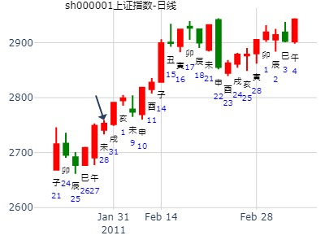
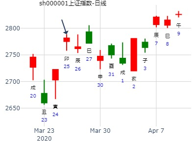
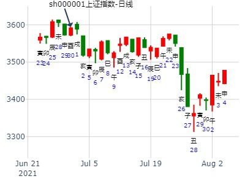
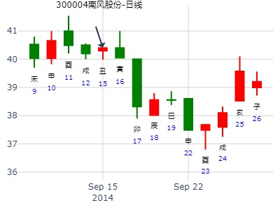
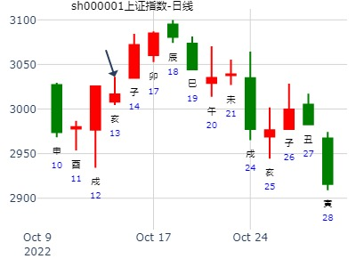
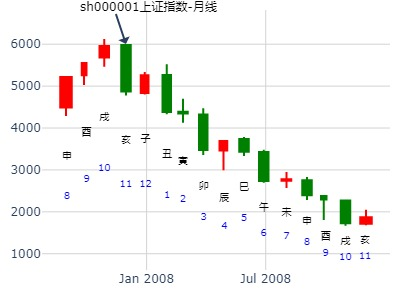
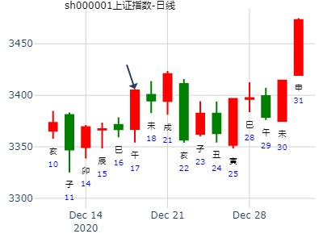

主题：上证股指亥子月走势？丁亥 辛亥 癸丑 丙辰 (寅卯空)
丁亥年十月初六(2007/11/15 07:53:19)
地天泰
白虎 子孙酉金 ∥ 应
腾蛇 妻财亥水 ∥
勾陈 兄弟丑土 ∥
朱雀 兄弟辰土 ／ 世父母巳火：
青龙 官鬼寅木 ／
玄武 妻财子水 ／
先试试，留个记号：
这个卦我认为亥子月是下跌的走势。主力已经跑路了，
大幅减仓了，散户被套住，看看丑月还可以

占事：002009今天走势
起卦方式：手工指定
公历时间：2013年1月24日8时32分
干 支：壬辰年 癸丑月 庚寅日 庚辰时
旬 空：午未 寅卯 (午未) 申酉
坤宫：地天泰（六合）
六神 伏 神 【本 卦】
螣蛇 ▄▄ ▄▄
勾陈 ▄▄ ▄▄
朱雀 ▄▄ ▄▄
青龙 ▄▄▄▄▄
玄武 父母乙巳火 ▄▄▄▄▄ 官鬼甲寅木
白虎 ▄▄▄▄▄
试断：六合卦吉，酉金旺相生才丑土兄日克巳火休囚不上卦，收阳
平开横向震荡向下收跌0.26、3.42的大阴线，断错
男 占事：000825太钢不锈下周涨跌
公历起卦时间：2017年1月13日15时53分 (电脑自动)
干支：丙申年 辛丑月 庚子日 甲申时 （日空：辰巳）
神煞：驿马－寅 桃花－酉 日禄－申 贵人－丑，未
坤宫：地天泰 (六合)
六神 伏神 本 卦
腾蛇 子孙癸酉金 ▅▅ ▅▅ 应
勾陈 妻财癸亥水 ▅▅ ▅▅
朱雀 兄弟癸丑土 ▅▅ ▅▅
青龙 兄弟甲辰土 ▅▅▅▅▅ 世
玄武 父母乙巳火 官鬼甲寅木 ▅▅▅▅▅
白虎 妻财甲子水 ▅▅▅▅▅

占事：000810创维数字明天涨跌
公历起卦时间：2016年2月3日15时47分 (电脑自动)
干支：乙未年 己丑月 乙卯日 甲申时 （日空：子丑）
神煞：驿马－巳 桃花－子 日禄－卯 贵人－子，申
坤宫：地天泰 (六合)
六神 伏神 本 卦
玄武 子孙癸酉金 ▅▅ ▅▅ 应
白虎 妻财癸亥水 ▅▅ ▅▅
腾蛇 兄弟癸丑土 ▅▅ ▅▅
勾陈 兄弟甲辰土 ▅▅▅▅▅ 世
朱雀 父母乙巳火 官鬼甲寅木 ▅▅▅▅▅
青龙 妻财甲子水 ▅▅▅▅▅
子孙暗动是关键。

这个是涨停卦吗
男 占事：600623双钱股份明天涨跌
公历起卦时间：2016年2月17日15时48分 (电脑自动)
干支：丙申年 庚寅月 己巳日 壬申时 （日空：戌亥）
坤宫：地天泰 (六合)
六神 伏神 本 卦
勾陈 子孙癸酉金 ▅▅ ▅▅ 应
朱雀 妻财癸亥水 ▅▅ ▅▅
青龙 兄弟癸丑土 ▅▅ ▅▅
玄武 兄弟甲辰土 ▅▅▅▅▅ 世
白虎 父母乙巳火 官鬼甲寅木 ▅▅▅▅▅
腾蛇 妻财甲子水 ▅▅▅▅▅
关键： 亥水旬空被冲，暗动。 但是兄弟持世，不持续

交流卦理：涨停卦象之一 六冲化六冲 兄爻轮动生世 600069
涨停卦例二： 意念 占事：测下周600696涨跌？
公历时间：2011年3月6日18时32分
干支：辛卯年 辛卯月 庚申日 乙酉时
旬空：午未 午未 子丑 午未
神煞：驿马─寅 桃花─酉 日禄─申 贵人─丑，未
坤宫：地天泰（六合）
六神 伏 神 【本 卦】
螣蛇 ▄▄ ▄▄ 子孙癸酉金 应
勾陈 ▄▄ ▄▄ 妻财癸亥水
朱雀 ▄▄ ▄▄ 兄弟癸丑土
青龙 ▄▄▄▄▄ 兄弟甲辰土 世
玄武 父母乙巳火 ▄▄▄▄▄ 官鬼甲寅木
白虎 ▄▄▄▄▄ 妻财甲子水
有云：六合难涨！ 又是忌神持世，所以尽管辛苦选出来的票还是没有坚定买入……汗！
实际：酉日涨1.12%，戍日涨停^——酉合世戍冲世均涨，难道就是因为是“地天泰”么？呵呵 （明日亥临，有人说，兄爻持世忌临用神日，且看？！）——亥日涨6.03%，子丑日估计下跌——子日合丑兄冷落世辰土；丑日出空力量大过辰土……
实际：子日跌0.8%，丑日平。
注释： 戌日世爻兄弟日破，反而有财。
___

占事：明天股市
公历：2016年3月9日21时23分，星期三。
干支：丙申年 辛卯月 庚寅日 丁亥时 (卦身：寅)
主变卦 地天泰(坤宫) [空亡:午、未]
螣蛇 ▅▅ ▅▅ 子孙癸酉金 应
勾陈 ▅▅ ▅▅ 妻财癸亥水
朱雀 ▅▅ ▅▅ 兄弟癸丑土
青龙 ▅▅▅▅▅ 兄弟甲辰土 世
玄武 父母乙巳火 ▅▅▅▅▅ 官鬼甲寅木
白虎 ▅▅▅▅▅ 妻财甲子水
捍卫老祖宗感通卦尊严：测2020.3.17上证收盘走势？2赛02
测2020.3.17上证收盘十位数tlmn sbmn galyh xs?
公历起卦时间：2020年3月16日16时52分 (电脑自动)
干支：庚子年 己卯月 戊午日 庚申时 （日空：子丑）
坤宫：地天泰 (六合)
六神 伏神 本 卦
朱雀 子孙癸酉金 ▅▅ ▅▅ 应
青龙 妻财癸亥水 ▅▅ ▅▅
玄武 兄弟癸丑土 ▅▅ ▅▅
白虎 兄弟甲辰土 ▅▅▅▅▅ 世
螣蛇 父母乙巳火 官鬼甲寅木 ▅▅▅▅▅
勾陈 妻财甲子水 ▅▅▅▅▅
占事：3.26上证收盘走势？
公历起卦时间：2020年3月25日17时11分 (电脑自动)
干支：庚子年 己卯月 丁卯日 己酉时 （日空：戌亥）
坤宫：地天泰 (六合)
六神 伏神 本 卦
青龙 子孙癸酉金 ▅▅ ▅▅ 应
玄武 妻财癸亥水 ▅▅ ▅▅
白虎 兄弟癸丑土 ▅▅ ▅▅
螣蛇 兄弟甲辰土 ▅▅▅▅▅ 世
勾陈 父母乙巳火 官鬼甲寅木 ▅▅▅▅▅
朱雀 妻财甲子水 ▅▅▅▅▅

泰静卦,4月上证？金玉堂
时间: 2023-04-02
干支: 癸卯年乙卯月庚寅日 (旬空: 午未 )
泰静卦
腾蛇 ▅▅ ▅▅ 子孙酉金 应
勾陈 ▅▅ ▅▅ 妻财亥水
朱雀 ▅▅ ▅▅ 兄弟丑土
青龙 ▅▅▅▅▅ 兄弟辰土 世
玄武 ▅▅▅▅▅ 官鬼寅木
白虎 ▅▅▅▅▅ 妻财子水
泰静卦_002721
占事: 5月第一周走势？小梅卦
时间: 2014-05-02
干支: 甲午年戊辰月癸酉日 (旬空: 戌亥 )
泰静卦
六神 伏神 本 卦
白虎 ▅▅ ▅▅ 子孙酉金 应
腾蛇 ▅▅ ▅▅ 妻财亥水
勾陈 ▅▅ ▅▅ 兄弟丑土
朱雀 ▅▅▅▅▅ 兄弟辰土 世
青龙 父母巳火▅▅▅▅▅ 官鬼寅木
玄武 ▅▅▅▅▅ 妻财子水
男 占事：300028金亚科技明天涨跌
公历起卦时间：2016年5月10日18时7分 (电脑自动)
干支：丙申年 癸巳月 壬辰日 己酉时 （日空：午未）
坤宫：地天泰 (六合)
六神 伏神 本 卦
白虎 子孙癸酉金 ▅▅ ▅▅ 应
腾蛇 妻财癸亥水 ▅▅ ▅▅
勾陈 兄弟癸丑土 ▅▅ ▅▅
朱雀 兄弟甲辰土 ▅▅▅▅▅ 世
青龙 父母乙巳火 官鬼甲寅木 ▅▅▅▅▅
玄武 妻财甲子水 ▅▅▅▅▅
占事：航天长峰庚子年巳午月哪月底？
公历起卦时间：2020年5月20日10时55分 (电脑自动)
干支：庚子年 辛巳月 癸亥日 丁巳时 （日空：子丑）
坤宫：地天泰 (六合)
六神 伏神 本 卦
白虎 子孙癸酉金 ▅▅ ▅▅ 应
螣蛇 妻财癸亥水 ▅▅ ▅▅
勾陈 兄弟癸丑土 ▅▅ ▅▅
朱雀 兄弟甲辰土 ▅▅▅▅▅ 世
青龙 父母乙巳火 官鬼甲寅木 ▅▅▅▅▅
玄武 妻财甲子水 ▅▅▅▅▅

男
占事：002029七匹狼下午跟明天涨跌
公历起卦时间：2015年6月24日10时55分 (电脑自动)
干支：乙未年 壬午月 辛未日 癸巳时 （日空：戌亥）
坤宫：地天泰 (六合)
六神 伏神 本 卦
腾蛇 子孙癸酉金 ▅▅ ▅▅ 应
勾陈 妻财癸亥水 ▅▅ ▅▅
朱雀 兄弟癸丑土 ▅▅ ▅▅
青龙 兄弟甲辰土 ▅▅▅▅▅ 世
玄武 父母乙巳火 官鬼甲寅木 ▅▅▅▅▅
白虎 妻财甲子水 ▅▅▅▅▅
2015年7月大盘涨跌卦
占事：2015年7月大盘涨跌？
公历起卦时间：2015年6月30日16时29分 (手工指定)
干支：乙未年 壬午月 丁丑日 戊申时 （日空：申酉）
神煞：驿马－亥 桃花－午 日禄－午 贵人－酉，亥
坤宫：地天泰 (六合)
六神 伏神 本 卦
青龙 子孙癸酉金 ▅▅ ▅▅ 应
玄武 妻财癸亥水 ▅▅ ▅▅
白虎 兄弟癸丑土 ▅▅ ▅▅
腾蛇 兄弟甲辰土 ▅▅▅▅▅ 世
勾陈 父母乙巳火 官鬼甲寅木 ▅▅▅▅▅
朱雀 妻财甲子水 ▅▅▅▅▅

我附上三个卦例，
占事：大盘周卦
公历时间：2019年6月14日16时22分
干 支：己亥年 庚午月 壬午日 戊申时
旬 空：辰巳 戌亥 申酉 寅卯
神 煞：驿马─申 桃花─卯 日禄─亥 贵人─巳，卯
坤宫：地天泰（六合）
六神 伏 神 【本 卦】
白虎 ▄▄ ▄▄ 子孙癸酉金 应
螣蛇 ▄▄ ▄▄ 妻财癸亥水
勾陈 ▄▄ ▄▄ 兄弟癸丑土
朱雀 ▄▄▄▄▄ 兄弟甲辰土 世
青龙 父母乙巳火 ▄▄▄▄▄ 官鬼甲寅木
玄武 ▄▄▄▄▄ 妻财甲子水
2021年7月大盘涨跌卦
公历起卦时间：2021年6月30日16时18分 (手工指定)
干支：辛丑年 甲午月 己酉日 壬申时 （日空：寅卯）
神煞：驿马－亥 桃花－午 日禄－午 贵人－子，申
坤宫：地天泰 (六合)
六神 伏神 本 卦
勾陈 子孙癸酉金 ▅▅ ▅▅ 应
朱雀 妻财癸亥水 ▅▅ ▅▅
青龙 兄弟癸丑土 ▅▅ ▅▅
玄武 兄弟甲辰土 ▅▅▅▅▅ 世
白虎 父母乙巳火 官鬼甲寅木 ▅▅▅▅▅
螣蛇 妻财甲子水 ▅▅▅▅▅

占事：619问中科金财2周。
时间: 2022-6-19 金玉堂
干支: 壬寅年丙午月癸卯日丙辰时 (旬空: 辰巳 )
泰静卦
白虎 ▅▅ ▅▅ 子孙酉金 应
腾蛇 ▅▅ ▅▅ 妻财亥水
勾陈 ▅▅ ▅▅ 兄弟丑土
朱雀 ▅▅▅▅▅ 兄弟辰土 世
青龙 ▅▅▅▅▅ 官鬼寅木
玄武 ▅▅▅▅▅ 妻财子水
小往大来，吉亨。
点评：兄弟持世，虽然旬空还可涨几天，但过后依旧跌。
兄弟持世，旬空，还能涨2天，就见顶。
泰静卦_上证下周风生水起_2024-06-14
时间: 2024-06-14
干支: 甲辰年庚午月己酉日 (旬空: 寅卯 )
泰静卦
勾陈 ▅▅ ▅▅ 子孙酉金 应
朱雀 ▅▅ ▅▅ 妻财亥水
青龙 ▅▅ ▅▅ 兄弟丑土
玄武 ▅▅▅▅▅ 兄弟辰土 世
白虎 ▅▅▅▅▅ 官鬼寅木
腾蛇 ▅▅▅▅▅ 妻财子水
业绩前瞻个股，供参考
主题：迪马股份[600565]，准备买入能否得财？
2007-07-07
丁亥 丁未 壬寅 庚戌 (辰巳空)
丁亥年五月廿三(2007/07/07 20:24:29)
地天泰
白虎 子孙酉金 ∥ 应
腾蛇 妻财亥水 ∥
勾陈 兄弟丑土 ∥
朱雀 兄弟辰土 ／ 世父母巳火：
青龙 官鬼寅木 ／
玄武 妻财子水 ／
兄弟旬空，短线依旧有财。
占事：600156 中线走势预测 起卦方式：手动摇卦
公历时间：2011年7月19日18时17分
干 支：辛卯年 乙未月 乙亥日 乙酉时
旬 空：午未 辰巳 (申酉) 午未
坤宫：地天泰（六合）
六神 伏 神 【本 卦】
玄武 ▄▄ ▄▄ 子孙癸酉金 应
白虎 ▄▄ ▄▄ 妻财癸亥水
螣蛇 ▄▄ ▄▄ 兄弟癸丑土
勾陈 ▄▄▄▄▄ 兄弟甲辰土 世
朱雀 父母乙巳火 ▄▄▄▄▄ 官鬼甲寅木
青龙 ▄▄▄▄▄ 妻财甲子水
卦为六合，财值日，月值兄弟。申酉旬空！
未申月上涨，酉月合兄弟之世爻而下跌。
戍亥子月继续下跌，丑月略有反弹。
月K线图
7.14试探索上证何日达到3600点？现在3414.62
公历起卦时间：2020年7月14日15时55分 (电脑自动)
干支：庚子年 癸未月 戊午日 庚申时 （日空：子丑）
神煞：驿马－申 桃花－卯 日禄－巳 贵人－丑，未
坤宫：地天泰 (六合)
六神 伏神 本 卦
朱雀 子孙癸酉金 ▅▅ ▅▅ 应
青龙 妻财癸亥水 ▅▅ ▅▅
玄武 兄弟癸丑土 ▅▅ ▅▅
白虎 兄弟甲辰土 ▅▅▅▅▅ 世
螣蛇 父母乙巳火 官鬼甲寅木 ▅▅▅▅▅
勾陈 妻财甲子水 ▅▅▅▅▅
先进数通300541下周一如何
公历起卦时间：2021年7月30日16时27分 (1角手摇卦)
干支：辛丑年 乙未月 己卯日 壬申时 （日空：申酉）
神煞：驿马－巳 桃花－子 日禄－午 贵人－子，申
坤宫：地天泰 (六合)
六神 伏神 本 卦
勾陈 子孙癸酉金 ▅▅ ▅▅ 应
朱雀 妻财癸亥水 ▅▅ ▅▅
青龙 兄弟癸丑土 ▅▅ ▅▅
玄武 兄弟甲辰土 ▅▅▅▅▅ 世
白虎 父母乙巳火 官鬼甲寅木 ▅▅▅▅▅
螣蛇 妻财甲子水 ▅▅▅▅▅
注释: 旬空子孙被日冲暗动
占事：600760中航黑豹明天涨跌
公历起卦时间：2014年8月12日17时49分 (电脑自动)
干支：甲午年 壬申月 乙卯日 乙酉时 （日空：子丑）
坤宫：地天泰 (六合)
六神 伏神 本 卦
玄武 子孙癸酉金 ▅▅ ▅▅ 应
白虎 妻财癸亥水 ▅▅ ▅▅
腾蛇 兄弟癸丑土 ▅▅ ▅▅
勾陈 兄弟甲辰土 ▅▅▅▅▅ 世
朱雀 父母乙巳火 官鬼甲寅木 ▅▅▅▅▅
青龙 妻财甲子水 ▅▅▅▅▅
男 占事：002609顺捷科技明天涨跌
公历起卦时间：2015年8月13日15时53分 (电脑自动)
干支：乙未年 甲申月 辛酉日 丙申时 （日空：子丑）
坤宫：地天泰 (六合)
六神 伏神 本 卦
腾蛇 子孙癸酉金 ▅▅ ▅▅ 应
勾陈 妻财癸亥水 ▅▅ ▅▅
朱雀 兄弟癸丑土 ▅▅ ▅▅
青龙 兄弟甲辰土 ▅▅▅▅▅ 世
玄武 父母乙巳火 官鬼甲寅木 ▅▅▅▅▅
白虎 妻财甲子水 ▅▅▅▅▅
男 占事：300099尤洛卡明天涨跌
公历起卦时间：2016年8月1日15时45分 (电脑自动)
干支：丙申年 乙未月 乙卯日 甲申时 （日空：子丑）
神煞：驿马－巳 桃花－子 日禄－卯 贵人－子，申
坤宫：地天泰 (六合)
六神 伏神 本 卦
玄武 子孙癸酉金 ▅▅ ▅▅ 应
白虎 妻财癸亥水 ▅▅ ▅▅
腾蛇 兄弟癸丑土 ▅▅ ▅▅
勾陈 兄弟甲辰土 ▅▅▅▅▅ 世
朱雀 父母乙巳火 官鬼甲寅木 ▅▅▅▅▅
青龙 妻财甲子水 ▅▅▅▅▅
兄弟持世，但是子孙暗动，隔日虽然是辰日，还能涨。
涨完立马见顶。
今年2021年，600111北方稀土是否会重组？
公历起卦时间：2021年8月1日17时0分 (手工指定)
干支：辛丑年 乙未月 辛巳日 丁酉时 （日空：申酉）
神煞：驿马－亥 桃花－午 日禄－酉 贵人－寅，午
坤宫：地天泰 (六合)
六神 伏神 本 卦
螣蛇 子孙癸酉金 ▅▅ ▅▅ 应
勾陈 妻财癸亥水 ▅▅ ▅▅
朱雀 兄弟癸丑土 ▅▅ ▅▅
青龙 兄弟甲辰土 ▅▅▅▅▅ 世
玄武 父母乙巳火 官鬼甲寅木 ▅▅▅▅▅
白虎 妻财甲子水 ▅▅▅▅▅
手摇医药etf 8月15日至8月19日
公历：2022年8月14日23时19分，星期日。
干支：壬寅年 戊申月 庚子日 丙子时 (卦身：寅)
主 地天泰(坤宫) [空亡:辰、巳]
螣蛇 ▅▅ ▅▅ 子孙癸酉金 应
勾陈 ▅▅ ▅▅ 妻财癸亥水
朱雀 ▅▅ ▅▅ 兄弟癸丑土
青龙 ▅▅▅▅▅ 兄弟甲辰土 世
玄武 父母乙巳火 ▅▅▅▅▅ 官鬼甲寅木
白虎 ▅▅▅▅▅ 妻财甲子水
2009年10月大盘涨跌卦
占事：2009年10月大盘涨跌？
公历时间：2009年9月30日16时12分 星期三
干支：己丑年 癸酉月 戊寅日 庚申时 (旬空：申酉)
神煞：驿马—申 桃花—卯 日禄—巳 贵人—丑，未
坤宫：地天泰（六合）
六神 伏 神 【本 卦】
朱雀 ▅▅ ▅▅ 子孙癸酉金 应
青龙 ▅▅ ▅▅ 妻财癸亥水
玄武 ▅▅ ▅▅ 兄弟癸丑土
白虎 ▅▅▅▅▅ 兄弟甲辰土 世
螣蛇 父母乙巳火 ▅▅▅▅▅ 官鬼甲寅木
勾陈 ▅▅▅▅▅ 妻财甲子水
10月世爻月破？

风生水起
占事: 航天 长峰 未来二周
起卦方式：手动摇卦
公历时间：2014年9月3日12时7分
干支：甲午年 壬申月 丁丑日 丙午时
旬空：辰巳 戌亥 申酉 寅卯
坤宫：地天泰（六合）
六神 伏 神 【本 卦】
青龙 ▄▄ ▄▄ 子孙癸酉金 应
玄武 ▄▄ ▄▄ 妻财癸亥水
白虎 ▄▄ ▄▄ 兄弟癸丑土
螣蛇 ▄▄▄▄▄ 兄弟甲辰土 世
勾陈 父母乙巳火 ▄▄▄▄▄ 官鬼甲寅木
朱雀 ▄▄▄▄▄ 妻财甲子水
占事：300004南风股份下周涨跌
公历起卦时间：2014年9月13日15时51分 (电脑自动)
干支：甲午年 癸酉月 丁亥日 戊申时 （日空：午未）
坤宫：地天泰 (六合)
六神 伏神 本 卦
青龙 子孙癸酉金 ▅▅ ▅▅ 应
玄武 妻财癸亥水 ▅▅ ▅▅
白虎 兄弟癸丑土 ▅▅ ▅▅
腾蛇 兄弟甲辰土 ▅▅▅▅▅ 世
勾陈 父母乙巳火 官鬼甲寅木 ▅▅▅▅▅
朱雀 妻财甲子水 ▅▅▅▅▅

占事：浙江龙盛到十月
时间: 2021-9-15 23：35
干支: 辛丑年丁酉月丙寅日 (旬空: 戌亥 )
（注意：此处为子时，##原图片为丁卯日 庚子时##， 文字卦统一按日期排卦）
泰静卦
青龙 ▅▅ ▅▅ 子孙酉金 应
玄武 ▅▅ ▅▅ 妻财亥水
白虎 ▅▅ ▅▅ 兄弟丑土
腾蛇 ▅▅▅▅▅ 兄弟辰土 世
勾陈 ▅▅▅▅▅ 官鬼寅木
朱雀 ▅▅▅▅▅ 妻财子水
寅卯日涨，因为克住兄弟，或激起应爻暗动而涨。但涨涨就没电了。
地天泰静卦，浙江龙盛到十月底。兄弟持世莫求财。（静卦）
子孙暗动，短期涨几天，就见顶。哪怕24日亥日妻财值班照跌不娱
占事：000683远兴能源明天涨跌 马云才
公历起卦时间：2016年10月24日15时41分 (电脑自动)
干支：丙申年 戊戌月 己卯日 壬申时 （日空：申酉）
坤宫：地天泰 (六合)
六神 伏神 本 卦
勾陈 子孙癸酉金 ▅▅ ▅▅ 应
朱雀 妻财癸亥水 ▅▅ ▅▅
青龙 兄弟癸丑土 ▅▅ ▅▅
玄武 兄弟甲辰土 ▅▅▅▅▅ 世
白虎 父母乙巳火 官鬼甲寅木 ▅▅▅▅▅
腾蛇 妻财甲子水 ▅▅▅▅▅
卯日当天是煤炭集体暴涨。当天我买的煤恒源煤电971暴涨以及推荐的ST神火涨停，而这个煤却跌。卯冲应爻暗动，应在当天涨？第二天仍是辰日墓财跌。
辰日一是世爻持世值日，二是墓亥子水财，要跌。
兄弟持世莫求财。
占事：先进数通300541下周一如何
公历时间：2018年10月5日16时26分
干 支：戊戌年 辛酉月 庚午日 甲申时
旬 空：辰巳 子丑 戌亥 午未
神 煞：驿马─申 桃花─卯 日禄─申 贵人─丑，未
坤宫：地天泰（六合）
六神 伏 神 【本 卦】
螣蛇 ▄▄ ▄▄ 子孙癸酉金 应
勾陈 ▄▄ ▄▄ 妻财癸亥水
朱雀 ▄▄ ▄▄ 兄弟癸丑土
青龙 ▄▄▄▄▄ 兄弟甲辰土 世
玄武 父母乙巳火 ▄▄▄▄▄ 官鬼甲寅木
白虎 ▄▄▄▄▄ 妻财甲子水
测子日大盘
公历起卦时间：2022年10月13日15时41分 (电脑自动)
干支：壬寅年 庚戌月 己亥日 壬申时 （日空：辰巳）
坤宫：地天泰 (六合)
六神 伏神 本 卦
勾陈 子孙癸酉金 ▅▅ ▅▅ 应
朱雀 妻财癸亥水 ▅▅ ▅▅
青龙 兄弟癸丑土 ▅▅ ▅▅
玄武 兄弟甲辰土 ▅▅▅▅▅ 世
白虎 父母乙巳火 官鬼甲寅木 ▅▅▅▅▅
螣蛇 妻财甲子水 ▅▅▅▅▅
似乎明天跌幅加大。
反馈： 实际大涨。世爻日空月破。财爻值日。

主题：上证股指亥子月走势？
丁亥 辛亥 癸丑 丙辰 (寅卯空) (2007/11/15 07:53:19)
地天泰
白虎 子孙酉金 ∥ 应
腾蛇 妻财亥水 ∥
勾陈 兄弟丑土 ∥
朱雀 兄弟辰土 ／ 世父母巳火：
青龙 官鬼寅木 ／
玄武 妻财子水 ／
先试试，留个记号：这个卦我认为亥子月是下跌的走势。主力已经跑路了，大幅减仓了，散户被套住，看看丑月还可以

占事：大盘下周11.25-11.29
公历起卦时间：2013年11月22日11时15分 (电脑自动)
干支：癸巳年 癸亥月 壬辰日 丙午时 （日空：午未）
神煞：驿马－寅 桃花－酉 日禄－亥 贵人－卯，巳
坤宫：地天泰 (六合)
六神 伏神 本 卦
白虎 子孙癸酉金 ▅▅ ▅▅ 应
腾蛇 妻财癸亥水 ▅▅ ▅▅
勾陈 兄弟癸丑土 ▅▅ ▅▅
朱雀 兄弟甲辰土 ▅▅▅▅▅ 世
青龙 父母乙巳火 官鬼甲寅木 ▅▅▅▅▅
玄武 妻财甲子水 ▅▅▅▅▅
占事：600246万通地产下周涨跌
公历起卦时间：2014年11月7日18时5分 (电脑自动)
干支：甲午年 甲戌月 壬午日 己酉时 （日空：申酉）
坤宫：地天泰 (六合)
六神 伏神 本 卦
白虎 子孙癸酉金 ▅▅ ▅▅ 应
腾蛇 妻财癸亥水 ▅▅ ▅▅
勾陈 兄弟癸丑土 ▅▅ ▅▅
朱雀 兄弟甲辰土 ▅▅▅▅▅ 世
青龙 父母乙巳火 官鬼甲寅木 ▅▅▅▅▅
玄武 妻财甲子水 ▅▅▅▅▅
世爻兄弟月破，还能涨几天。
11.10新联电子收盘走势？
公历起卦时间：2021年11月9日18时3分 (电脑自动)
干支：辛丑年 己亥月 辛酉日 丁酉时 （日空：子丑）
神煞：驿马－亥 桃花－午 日禄－酉 贵人－寅，午
坤宫：地天泰 (六合)
六神 伏神 本 卦
螣蛇 子孙癸酉金 ▅▅ ▅▅ 应
勾陈 妻财癸亥水 ▅▅ ▅▅
朱雀 兄弟癸丑土 ▅▅ ▅▅
青龙 兄弟甲辰土 ▅▅▅▅▅ 世
玄武 父母乙巳火 官鬼甲寅木 ▅▅▅▅▅
白虎 妻财甲子水 ▅▅▅▅▅

测10日卯日大盘
公历起卦时间：2022年11月9日13时32分 (电脑自动)
干支：壬寅年 辛亥月 丙寅日 乙未时 （日空：戌亥）
坤宫：地天泰 (六合)
六神 伏神 本 卦
青龙 子孙癸酉金 ▅▅ ▅▅ 应
玄武 妻财癸亥水 ▅▅ ▅▅
白虎 兄弟癸丑土 ▅▅ ▅▅
螣蛇 兄弟甲辰土 ▅▅▅▅▅ 世
勾陈 父母乙巳火 官鬼甲寅木 ▅▅▅▅▅
朱雀 妻财甲子水 ▅▅▅▅▅
占事：601002晋亿实业明天涨跌！
公历起卦时间：2014年12月30日15时51分 (电脑自动)
干支：甲午年 丙子月 乙亥日 甲申时 （日空：申酉）
坤宫：地天泰 (六合)
六神 伏神 本 卦
玄武 子孙癸酉金 ▅▅ ▅▅ 应
白虎 妻财癸亥水 ▅▅ ▅▅
腾蛇 兄弟癸丑土 ▅▅ ▅▅
勾陈 兄弟甲辰土 ▅▅▅▅▅ 世
朱雀 父母乙巳火 官鬼甲寅木 ▅▅▅▅▅
青龙 妻财甲子水 ▅▅▅▅▅
主帖标题: 600086东方金钰近期走势
起卦方式：手动摇卦
公历时间：2019年12月4日13时47分
干 支：己亥年 乙亥月 乙亥日 癸未时
旬 空：辰巳 申酉 申酉 申酉
神 煞：驿马─巳 桃花─子 日禄─卯 贵人─子，申
坤宫：地天泰（六合）
六神 伏 神 【本 卦】
玄武 ▄▄ ▄▄ 子孙癸酉金 应
白虎 ▄▄ ▄▄ 妻财癸亥水
螣蛇 ▄▄ ▄▄ 兄弟癸丑土
勾陈 ▄▄▄▄▄ 兄弟甲辰土 世
朱雀 父母乙巳火 ▄▄▄▄▄ 官鬼甲寅木
青龙 ▄▄▄▄▄ 妻财甲子水
试测紫光国微12.2己卯三-12.4辛巳哪日顶？
公历起卦时间：2020年12月2日14时37分 (电脑自动)
干支：庚子年 丁亥月 己卯日 辛未时 （日空：申酉）
坤宫：地天泰 (六合)
六神 伏神 本 卦
勾陈 子孙癸酉金 ▅▅ ▅▅ 应
朱雀 妻财癸亥水 ▅▅ ▅▅
青龙 兄弟癸丑土 ▅▅ ▅▅
玄武 兄弟甲辰土 ▅▅▅▅▅ 世
白虎 父母乙巳火 官鬼甲寅木 ▅▅▅▅▅
螣蛇 妻财甲子水 ▅▅▅▅▅
卯冲酉暗动。
试测上证2020.日收盘个位十位？
男 占事：试测上证2020.12.16收盘个位是几？
公历起卦时间：2020年12月16日13时33分 (电脑自动)
干支：庚子年 戊子月 癸巳日 己未时 （日空：午未）
坤宫：地天泰 (六合)
六神 伏神 本 卦
白虎 子孙癸酉金 ▅▅ ▅▅ 应
螣蛇 妻财癸亥水 ▅▅ ▅▅
勾陈 兄弟癸丑土 ▅▅ ▅▅
朱雀 兄弟甲辰土 ▅▅▅▅▅ 世
青龙 父母乙巳火 官鬼甲寅木 ▅▅▅▅▅
玄武 妻财甲子水 ▅▅▅▅▅
12月14至12月18日大盘预测(日测)
明天周五涨跌
公历时间：2020年12月17日17时36分
干 支：庚子年 戊子月 甲午日 癸酉时
旬 空：辰巳 午未 辰巳 戌亥
神 煞：驿马─申 桃花─卯 日禄─寅 贵人─丑，未
坤宫：地天泰（六合）
六神 伏 神 【本 卦】
玄武 ▄▄ ▄▄ 子孙癸酉金 应
白虎 ▄▄ ▄▄ 妻财癸亥水
螣蛇 ▄▄ ▄▄ 兄弟癸丑土
勾陈 ▄▄▄▄▄ 兄弟甲辰土 世
朱雀 父母乙巳火 ▄▄▄▄▄ 官鬼甲寅木
青龙 ▄▄▄▄▄ 妻财甲子水

占事：试测12.22上证收盘个位数？
公历起卦时间：2021年12月22日11时14分 (电脑自动)
干支：辛丑年 庚子月 甲辰日 庚午时 （日空：寅卯）
神煞：驿马－寅 桃花－酉 日禄－寅 贵人－丑，未
坤宫：地天泰 (六合)
六神 伏神 本 卦
玄武 子孙癸酉金 ▅▅ ▅▅ 应
白虎 妻财癸亥水 ▅▅ ▅▅
螣蛇 兄弟癸丑土 ▅▅ ▅▅
勾陈 兄弟甲辰土 ▅▅▅▅▅ 世
朱雀 父母乙巳火 官鬼甲寅木 ▅▅▅▅▅
青龙 妻财甲子水 ▅▅▅▅▅
占事：滨化股份12.28庚戌二-12.30壬子哪日顶？
公历起卦时间：2021年12月28日10时39分 (电脑自动)
干支：辛丑年 庚子月 庚戌日 辛巳时 （日空：寅卯）
神煞：驿马－申 桃花－卯 日禄－申 贵人－丑，未
坤宫：地天泰 (六合)
六神 伏神 本 卦
螣蛇 子孙癸酉金 ▅▅ ▅▅ 应
勾陈 妻财癸亥水 ▅▅ ▅▅
朱雀 兄弟癸丑土 ▅▅ ▅▅
青龙 兄弟甲辰土 ▅▅▅▅▅ 世
玄武 父母乙巳火 官鬼甲寅木 ▅▅▅▅▅
测元旦第一周沪市大盘
公历起卦时间：2022年12月30日15时44分 (电脑自动)
小寒：2023年01月05日23时35分
干支：壬寅年 壬子月 丁巳日 戊申时 （日空：子丑）
坤宫：地天泰 (六合)
六神 伏神 本 卦
青龙 子孙癸酉金 ▅▅ ▅▅ 应
玄武 妻财癸亥水 ▅▅ ▅▅
白虎 兄弟癸丑土 ▅▅ ▅▅
螣蛇 兄弟甲辰土 ▅▅▅▅▅ 世
勾陈 父母乙巳火 官鬼甲寅木 ▅▅▅▅▅
朱雀 妻财甲子水 ▅▅▅▅▅
亥水暗动。